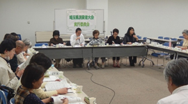

|
|
第53回埼玉県消費者大会実行委員会  4月20日(木)13時30分より、浦和コミュニティセンター第15集会室にて第53回埼玉県消費者大会第1回実行委員会が開催され、28人(19団体)事務局2人が出席しました。 【議 題】 1．岩岡事務局長挨拶 2．第53回消費者大会の運営体制と日程 以下のように確認しました。 （1）運営体制
（2）第53回埼玉県消費者大会日程と会場 10月12日(木)埼玉会館 （3）消費者大会に向けた検討内容 実行委員会開催スケジュール、各回実行委員会で話し合う内容を確認しました。 3．各団体参加者の自己紹介 4．第52回消費者大会決算報告・第53回消費者大会分担金・予算 上記について説明し、確認しました。 5．消費者大会のテーマや課題など 事務局長より、私たち消費者をとりまく社会状況・埼玉県の状況について報告し、大会の柱となるテーマ・スローガンや、全体会記念講演・分科会・プレ学習会で学ぶべきこと等を意見交換し、以下、確認しました。
6．市町村消費者行政関連事業調査を実施について 今年度も市町村消費者行政関連事業調査を実行委員会としておこなうことを提案し、確認しました。また、調査票を各自治体窓口に直接届ける取り組みを提案し、6月実行委員会にて調査表をお渡しすることとしました。 7．埼玉県消費者被害防止サポーター養成講座の各団体での開催について 事務局より、昨年の各団体への協力の感謝と今年度の実施の呼びかけ、景品表示法講座の受講と消費者被害防止の啓発グッズ頒布協力のお願いをしました。 8．お知らせ
|